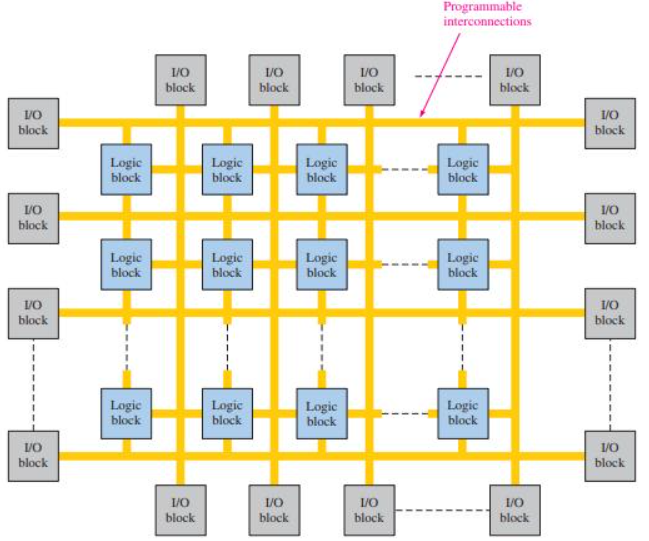
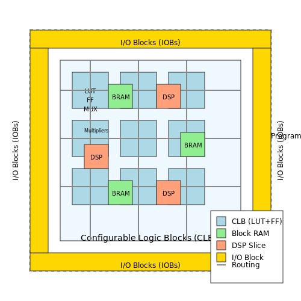
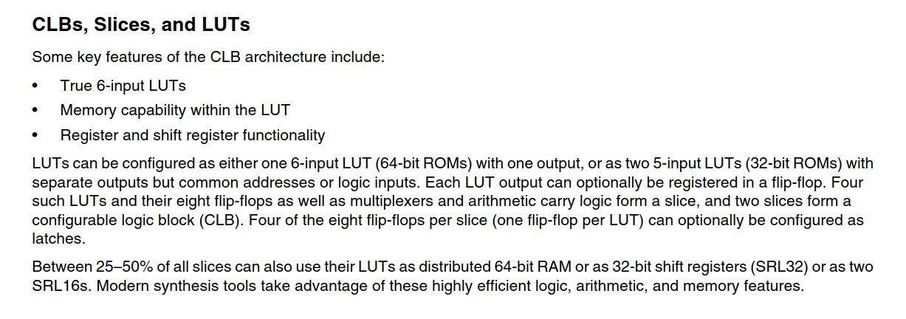
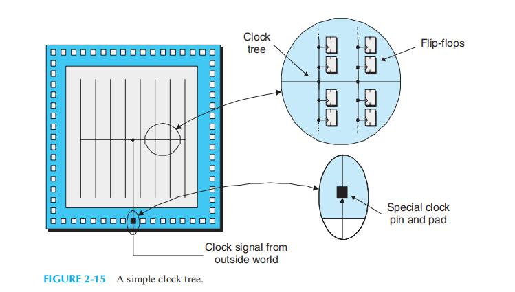
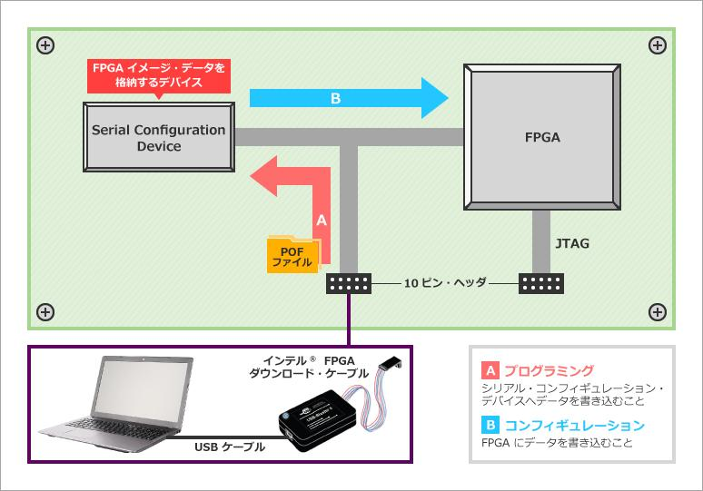
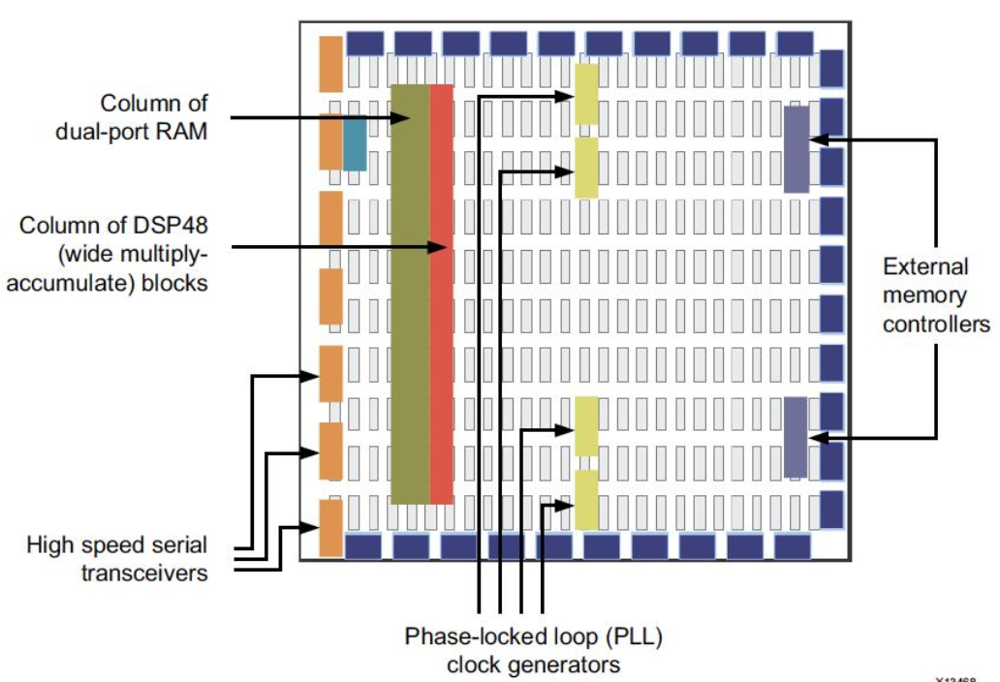

1 Basic FPGA Overview & Concepts
1.1 FPGA คืออะไร? (What is an FPGA?)
FPGA ย่อมาจาก Field Programmable Gate Array คือ ชิปวงจรรวม (Integrated Circuit: IC) ชนิดหนึ่งที่โครงสร้างฮาร์ดแวร์ภายในสามารถถูกโปรแกรมหรือกำหนดค่าใหม่ (Reconfigure) ได้โดยผู้ใช้งานหลังจากผลิตมาจากโรงงานแล้ว ("In the Field")
ต่างจาก ASIC (Application-Specific Integrated Circuit) หรือชิปเฉพาะทาง (เช่น ชิปประมวลผลผลใน iPhone หรือการ์ดจอ) ที่โครงสร้างวงจรถูกสร้างตายตัวมาจากโรงงาน ไม่สามารถแก้ไขได้อีก
1.1.1 คำศัพท์:
- Field Programmable: สามารถโปรแกรมแก้ไขโครงสร้างฮาร์ดแวร์ได้หลังจากผลิตมาแล้ว
- Logic Blocks: บล็อกประมวลผลตรรกะพื้นฐานภายใน FPGA ที่สามารถตั้งค่าให้ทำงานตามตรรกะใดๆ ก็ได้
- Interconnects: สายสัญญาณเชื่อมต่อภายในแบบโปรแกรมเส้นทางได้ (Programmable Routing) สำหรับเชื่อมต่อ Logic Blocks แต่ละตัวเข้าด้วยกัน

Figure 1-1
1.2 FPGA เหมาะกับงานอะไร? (FPGA Use Cases & Comparison)
ในการเลือกใช้งานชิปประมวลผลสำหรับระบบฝังตัว (Embedded Systems) หรือระบบประมวลผลประสิทธิภาพสูง เรามักจะเปรียบเทียบระหว่าง MCU (Microcontroller Unit), CPU / GPU, FPGA และ ASIC
1.2.1 ตารางเปรียบเทียบ FPGA vs MCU vs CPU/GPU vs ASIC
Table 1-1
| คุณสมบัติ (Feature) | MCU (Microcontroller) | CPU / GPU | FPGA | ASIC |
|---|---|---|---|---|
| Cost (Single Unit) | Low (○) | Medium-High (△) | High (✗) | Extremely High NRE / Low per unit (○) |
| Learning Curve | Easy (○) | Easy (○) | Hard (✗) | Very Hard (✗) |
| Development Time | Short (○) | Short (○) | Long (✗) | Extremely Long (✗) |
| Processing Performance | Low (△) | High (○) | Very High (Parallel) (○) | Maximum (○) |
| Real-time Determinism | Medium-High (△) | Low (Latencies) (✗) | Ultra High (Nanoseconds) (○) | Ultra High (○) |
| Concurrent Processing (Parallelism) | Sequential (✗) | Multi-threading (△) | True Hardware Parallel (○) | True Hardware Parallel (○) |
| Power Consumption | Very Low (○) | High (✗) | Moderate-High (△) | Optimized / Low (○) |
| Flexibility (Hardware Reconfig) | Fixed Hardware (✗) | Fixed Hardware (✗) | Reconfigurable (○) | Fixed Hardware (✗) |
1.2.2 สรุปจุดเด่นและการเลือกใช้งาน:
- MCU: เหมาะกับงานควบคุมทั่วไป (Control Logic), งานที่ต้องการราคาถูก, พัฒนาไว เช่น อ่านเซนเซอร์เปิด-ปิดไฟ
- CPU / GPU: เหมาะกับการประมวลผลข้อมูลลำดับเชิงซ้อน (Sequential Execution) หรืองาน Graphic / AI model ใหญ่ๆ ที่ประมวลผลบนซอฟต์แวร์
- FPGA: เหมาะกับงานที่ต้องการ True Parallel Processing (การประมวลผลขนานแท้จริงระดับฮาร์ดแวร์), งานที่ต้องการตอบสนองระดับ Microsecond / Nanosecond (Deterministic Real-time), งานประมวลผลสัญญาณดิจิทัล (DSP), Video Processing, High-Frequency Trading, Communication Protocols (5G/SDR) และการสร้าง Prototype สำหรับ ASIC
- ASIC: เหมาะกับผลิตภัณฑ์ที่มีปริมาณการผลิตระดับหลายล้านชิ้น (Mass Production) ที่ต้องการประสิทธิภาพสูงสุดและประหยัดพลังงานที่สุด
ex : ![[FPGA PCI Card.pdf]]
1.3 เทคโนโลยีของ FPGA (FPGA Technologies & Architectures)
จำแนกตามเทคโนโลยีการจัดเก็บข้อมูลการคอนฟิก (Configuration Technology):
Table 1-2
| ประเภท (Type) | ค่ายผู้ผลิตหลัก | ข้อดี (Advantages) | ข้อเสีย (Disadvantages) | ตัวอย่างตระกูลชิป (Families) |
|---|---|---|---|---|
| SRAM FPGA | AMD (Xilinx), Intel (Altera), Lattice | • ประสิทธิภาพสูงสุด ความจุ Gate สูงสุด • โปรแกรมใหม่ได้ไม่จำกัดจำนวนครั้ง • มี Ecosystem และ IP Core ใหญ่ที่สุด |
• Volatile (ข้อมูลสูญหายเมื่อดับไฟ) • ต้องใช้ Configuration Memory หรือ SPI Flash ภายนอกตอนเปิดเครื่อง • กินพลังงาน Static Power สูงกว่า |
• Intel: Cyclone, Arria, Stratix, Agilex • AMD: Spartan, Artix, Kintex, Virtex, Zynq, Versal • Lattice: iCE40, Certus-NX |
| Flash FPGA | Microchip (Actel), Lattice | • Instant-on (ทำงานทันทีเมื่อจ่ายไฟ) • Non-volatile (ไม่ต้องใช้ Flash โหลดข้อมูลภายนอก) • ใช้พลังงานต่ำ (Low Power) • ความปลอดภัยสูงป้องกันการ Reverse Engineer |
• มี Logic Density และความเร็วต่ำกว่า SRAM FPGA • จำนวนครั้งการโปรแกรมใหม่มีขีดจำกัด (Endurance) |
• Microchip: PolarFire, SmartFusion2, IGLOO2 • Lattice: MachXO2, MachXO3, MachXO5 |
| Antifuse FPGA | Microchip | • Instant-on, ความปลอดภัยสูงสุด • ทนต่อรังสีสูงมาก (Radiation Tolerant) เหมาะกับงานอวกาศ • ข้อมูลไม่สูญหายแน่นอน |
• One-Time Programmable (OTP) โปรแกรมได้ครั้งเดียวแก้ไขไม่ได้ • ราคาสูง ตัวเลือกในตลาดมีน้อย |
• Microchip: RTAX, Axcelerator |
[NOTE] ข้อสังเกตเพิ่มเติมเกี่ยวกับตระกูลชิป:1. Intel MAX 10: สถาปัตยกรรมภายในเป็น SRAM FPGA แต่มี Internal Flash สำหรับโหลด Configuration อยู่ในชิปตัวเดียวกัน ทำให้มีคุณสมบัติ Instant-on เหมือน Flash FPGA
2. Lattice iCE40: เป็น SRAM-based FPGA (มักโหลด Configuration จาก SPI Flash ภายนอก) ในขณะที่ MachXO เป็น Flash-based FPGA
1.4 การแบ่งระดับและตระกูลของ FPGA ในปัจจุบัน (FPGA Product Tiering)
1.4.1 FPGA (Only) Series
Table 1-3
| ผู้ผลิต (Vendor) | Entry Level / Low-End | Mid-Range | High-End / Enterprise |
|---|---|---|---|
| AMD (Xilinx) | Spartan-7 | Artix-7, Artix UltraScale+, Kintex-7 | Kintex UltraScale+, Virtex UltraScale+ |
| Intel (Altera) | MAX 10 | Cyclone V, Cyclone 10 GX | Agilex 3 / 5 / 7 |
| Lattice | iCE40, MachXO2/3 | Certus-NX | Avant |
| Microchip | IGLOO2 | SmartFusion2 | PolarFire |
1.4.2 SoC FPGA Series (FPGA ที่รวม CPU Hard Processor System ไว้ในชิปเดียว)
SoC FPGA ผสานรวม Hard IP Core ของ Processor (เช่น ARM Cortex หรือ RISC-V) เข้ากับ FPGA Logic Fabric ช่วยให้เขียนซอฟต์แวร์ระบบปฏิบัติการ (Linux/RTOS) ควบคู่กับการเร่งความเร็วด้วยฮาร์ดแวร์ (Hardware Acceleration) ได้ในชิปเดียว
Table 1-4
| ผู้ผลิต (Vendor) | Low-End SoC | Mid-Range SoC | High-End / Adaptive SoC |
|---|---|---|---|
| AMD (Xilinx) | Zynq-7000 (Dual-core ARM Cortex-A9) |
Zynq UltraScale+ MPSoC / Kria K26 (Quad-core Cortex-A53 + Dual Cortex-R5 + GPU) |
Versal AI Edge / Prime / Premium (Dual Cortex-A72 + Cortex-R5 + AI Engines) |
| Intel (Altera) | Cyclone V SoC (Dual-core ARM Cortex-A9) |
Arria 10 SoC / Agilex 5 SoC (Dual Cortex-A9 / Quad Cortex-A55 + M7) |
Agilex 7 SoC (Quad-core ARM Cortex-A53) |
| Microchip | SmartFusion2 (Single-core ARM Cortex-M3) |
PolarFire SoC (5-core 64-bit RISC-V Architecture) |
PolarFire SoC High-Density |
2 FPGA Internal Architecture & Resources
โครงสร้างทรัพยากรภายในของ FPGA ประกอบไปด้วยองค์ประกอบหลักที่สำคัญ ดังนี้:
- Logic Array Block (LUT + FF)
- BRAM (Block RAM)
- DSP
- PLL
- Hard IP(PCIe, DDR Ctrl, Transceivers, etc.)

Figure 2-1
2.2 องค์ประกอบพื้นฐาน: LUT & Flip-Flop
2.2.1 Look-Up Table (LUT)
- LUT คือวงจรความทรงจำขนาดเล็ก (SRAM-based Truth Table) ที่ใช้จำลองวงจรตรรกะแบบ Combinational Logic (เช่น AND, OR, XOR, MUX หรือสมการลอจิกซับซ้อน)
- ใน FPGA ยุคปัจจุบัน มักใช้ 4-input LUT หรือ 6-input LUT
- LUT 6-input สามารถทำป้อนอินพุตได้ 6 สัญญาณ และสร้างเอาต์พุตตาม Truth Table ที่โปรแกรมไว้ได้ทุกรูปแบบ
2.2.2 Flip-Flop (FF) / Registers
- ใช้สำหรับเก็บบันทึกสถานะข้อมูล (Sequential Logic) ขนานคู่ไปกับ LUT
- ทำงานตามจังหวะสัญญาณนาฬิกา (Clock-driven)
- หนึ่งบล็อกประมวลผลพื้นฐาน (เรียกว่า Slice ใน Xilinx หรือ ALM ใน Intel) มักประกอบด้วย LUT และ Flip-Flop ทำงานร่วมกัน
Configurable Logic Block :

Figure 2-2
Example : zynq-7000 CLB specification

2.3 หน่วยความจำภายใน (Block RAM)
FPGA มีเตรียมหน่วยความจำในภายในไว้ให้ แต่ขนาดไม่ได้ใหญ่มาก กรณีที่ต้องการใช้ขนาดใหญ่จำเป็นต้องต่อ external memory เอา
Table 2-1
| คุณสมบัติ (Feature) | Internal Block RAM (BRAM) | External DDR Memory (DRAM) |
|---|---|---|
| Capacity (ความจุ) | สเกลเล็กมาก (ไม่กี่ KB ถึง tens of MB) | สเกลใหญ่มาก (Hundreds of MB ถึงหลาย GB) |
| Access Speed (ความเร็ว) | ⭐⭐⭐⭐⭐ เร็วมากที่สุด | ⭐⭐⭐ ปานกลาง (ติด Latency การเชื่อมต่อ) |
| Latency (ความหน่วง) | 1–2 Clock Cycles | Tens ถึง Hundreds of Clock Cycles |
| Bandwidth (แบนด์วิดท์) | สูงมากสำหรับขนานหลายพอร์ต | สูงสำหรับข้อมูลขนาดใหญ่แบบ Sequential Transfer |
| Deterministic Timing | แน่นอน 100% (High Real-time) | มีความแปรผัน (จาก Refresh cycle & Arbitration) |
| Cost & PCB Design | ฝังมาใน FPGA / ไม่ต้องเดินสาย PCB เพิ่ม | ต้องซื้อชิป DDR เพิ่ม / การเดินสาย PCB ซับซ้อนสูง |
2.3.2 ตารางเปรียบเทียบขนาด BRAM ใน FPGA แต่ละรุ่น (โดยประมาณ)
Table 2-2
| ตระกูล FPGA | ขนาด Internal BRAM โดยประมาณ |
|---|---|
| Intel MAX 10 | < 1 MB |
| Intel Cyclone V | ~0.5 – 2 MB |
| AMD Artix-7 | ~1 – 2 MB |
| AMD Kria K26 | ~5.1 MB (BRAM + UltraRAM) |
2.3.3 การเลือกใช้งาน BRAM และ DDR (Application Use-cases)
Table 2-3
| ลักษณะงาน (Application) | เลือกใช้ BRAM | เลือกใช้ DDR Memory |
|---|---|---|
| FIFO (First-In, First-Out Buffer) | ✅ | ❌ |
| CPU Cache / Register File | ✅ | ❌ |
| Line Buffer (Image / Video Processing) | ✅ | ❌ |
| Frame Buffer (เก็บรูปภาพทั้งเฟรมใหญ่) | ❌ | ✅ |
| Linux OS Main Memory | ❌ | ✅ |
| Neural Network Weights (AI Model) | Small Models | Large Models |
| Video Recording Storage | ❌ | ✅ |
| Lookup Table ขนาดเล็ก | ✅ | ❌ |
| Real-time Motor Control Loop | ✅ | ❌ |
2.4 บล็อกประมวลผลคณิตศาสตร์ (DSP Blocks)
DSP Block (Digital Signal Processing Block) หรือบางค่ายเรียกว่า MULT / MAC Block
- เป็นวงจรฮาร์ดแวร์คูณและบวกสำเร็จรูป (Hardened Multiplier & Accumulator: MAC)
- ทำไมต้องมี DSP Block?: การใช้ LUT แบบธรรมดามาสร้างวงจรคูณเลข (Multiplier) จะสิ้นเปลือง LUT จำนวนมากและทำงานได้ช้า ดังนั้น FPGA จึงใส่ชิปคูณฮาร์ดแวร์เฉพาะทางนี้มาให้
- งานที่เหมาะกับ DSP: การทำ FIR/IIR Filter, Fast Fourier Transform (FFT), Matrix Multiplication, การประมวลผลภาพ และการคำนวณเวกเตอร์ใน AI/ML
2.5 ระบบสัญญาณนาฬิกา (PLL & Clock Network)
1. Global Clock Network:
- เป็นสายสัญญาณพิเศษภายใน FPGA ที่ออกแบบมาให้กระจายสัญญาณนาฬิกาไปยัง Flip-Flop ทุกตัวทั่วทั้งชิปด้วยความหน่วง (Skew) ที่ต่ำที่สุด ป้องกันปัญหา Timing Violation

Figure 2-3
1. PLL (Phase-Locked Loop) / MMCM (Mixed-Mode Clock Manager):
- ทำหน้าที่ปรับเพิ่ม/ลดความถี่สัญญาณนาฬิกา (Frequency Synthesis/Multiplication/Division)
- ปรับเปลี่ยนเฟสสัญญาณ (Phase Shift) เพื่อเช็ค Timing และจัดการกับ Clock Jitter
- สิ่งสำคัญคือ PLL ไม่ได้เป็น Global Clock Network แต่ เอาต์พุตของ PLL สามารถป้อนเข้า Global Clock Network ได้
2.6 บล็อกอินพุตและเอาต์พุต (I/O Banks & IO Voltage Standards)
พิน I/O ของ FPGA จะถูกจัดกลุ่มแบ่งออกเป็น I/O Banks โดยในแต่ละ Bank สามารถตั้งค่าแรงดันไฟฟ้าจ่ายพอร์ต (VCCIO) แยกอิสระจากกันได้ เพื่อให้อินเทอร์เฟซเชื่อมต่อกับอุปกรณ์ภายนอกต่างแรงดันได้อย่างยืดหยุ่น

Figure 2-4
2.6.2 มาตรฐานแรงดัน I/O ทั่วไปและการประยุกต์ใช้งาน (I/O Standards & Target Applications)
มาตรฐานสัญญาณไฟฟ้าแต่ละประเภทถูกออกแบบมาเพื่อรองรับงานเฉพาะทางที่แตกต่างกัน ทั้งด้านความเร็ว การประหยัดพลังงาน และการทนต่อสัญญาณรบกวน:
Table 2-4
| ประเภทสัญญาณ | มาตรฐาน I/O (I/O Standard) | แรงดัน $V_{CCIO}$ | ตัวอย่างการนำไปใช้งานจริง (Target Applications) |
|---|---|---|---|
| Single-Ended | LVTTL / LVCMOS 3.3V | 3.3V | • เชื่อมต่ออุปกรณ์ทั่วไป, Push Buttons, LEDs, Dip Switches • บัสสื่อสารความเร็วต่ำ: UART, SPI, I2C, GPIO บอร์ดทดลอง |
| LVCMOS 2.5V / 1.8V | 2.5V / 1.8V | • เชื่อมต่อ Microcontroller / Sensor ยุคใหม่ (เช่น ESP32, STM32) • การสื่อสารกับ SD Card, Flash Memory |
|
| LVCMOS 1.5V / 1.2V | 1.5V / 1.2V | • อินเทอร์เฟซเชื่อมต่อระหว่าง ชิประดับ High-Speed ICs พลังงานต่ำ • พอร์ตบัสภายในแผ่น PCB เพื่อลดการแผ่รังสีสนามแม่เหล็กไฟฟ้า (EMI) |
|
| Voltage-Referenced | SSTL-18 / SSTL-15 / SSTL-135 | 1.8V / 1.5V / 1.35V | • External DDR Memory: ใช้สำหรับบัสสัญญาณอ่าน-เขียน DDR2 (SSTL-18), DDR3 (SSTL-15) และ DDR3L (SSTL-135) |
| HSTL-18 / HSTL-15 | 1.8V / 1.5V | • High-Speed SRAM Memory, QDR (Quad Data Rate) SRAM | |
| Differential | TMDS (Transition Minimized Differential Signaling) | 3.3V | • Video Output: เชื่อมต่อพอร์ต HDMI และ DVI ส่งสัญญาณภาพดิจิทัลความเร็วสูง |
| LVDS (Low-Voltage Differential Signaling) | 2.5V / 1.8V | • Display Interfaces: ต่อจอภาพ LVDS Panel, จอ LCD อุตสาหกรรม • Image Sensors: เชื่อมต่อโมดูลกล้องถ่ายภาพความเร็วสูง (MIPI CSI-2 via Sub-LVDS) • High-Speed ADC/DAC: รับส่งข้อมูลภาพ/สัญญาณวิทยุจากชิประดับ Giga-sample |
|
| SLVS / Sub-LVDS | 1.2V / 1.8V | • เซนเซอร์กล้องความละเอียดสูงในสมาร์ตโฟนและโดรน (MIPI D-PHY) | |
| RSDS / Mini-LVDS | 2.5V / 1.8V | • บัสเชื่อมต่อภายในพาแนลจอแสดงผลแบน (Flat Panel Display Drivers) |
note : เวลาต่อวงจรต้องคำนึงค่าพวกนี้ (Vih, Vil, Voh, Vol) ถ้าไม่ match กันก็จะสื่อสารกันไม่ได้
Table 2-5
| Parameter | ความหมาย |
|---|---|
| VIH (Input High Voltage) | แรงดันต่ำสุดที่ FPGA รับรู้เป็น Logic '1' |
| VIL (Input Low Voltage) | แรงดันสูงสุดที่ FPGA รับรู้เป็น Logic '0' |
| VOH (Output High Voltage) | แรงดันต่ำสุดที่ FPGA รับประกันเมื่อขับ Logic '1' |
| VOL (Output Low Voltage) | แรงดันสูงสุดที่ FPGA รับประกันเมื่อขับ Logic '0' |
Table 2-6
| I/O Standard | VCCO | VIH (Min) | VIL (Max) | VOH (Min) | VOL (Max) |
|---|---|---|---|---|---|
| LVTTL | 3.3V | 2.0V | 0.8V | 2.4V | 0.4V |
| LVCMOS33 | 3.3V | ≈ 2.0V (≈0.7×VCCO) | ≈ 0.8V (≈0.3×VCCO) | ≥ 2.9V | ≤ 0.4V |
| LVCMOS25 | 2.5V | ≈ 1.75V | ≈ 0.75V | ≥ 2.2V | ≤ 0.4V |
| LVCMOS18 | 1.8V | ≈ 1.26V | ≈ 0.54V | ≥ 1.5V | ≤ 0.4V |
| LVCMOS15 | 1.5V | ≈ 1.05V | ≈ 0.45V | ≥ 1.2V | ≤ 0.4V |
| LVCMOS12 | 1.2V | ≈ 0.84V | ≈ 0.36V | ≥ 1.0V | ≤ 0.4V |
2.6.3 รายละเอียดสเปก I/O Banks และแอปพลิเคชันแยกตามตระกูลชิปยอดนิยม
ตารางเปรียบเทียบประเภท I/O Bank, ช่วงแรงดัน VCCIO, ข้อกำหนดเฉพาะ และตัวอย่างการนำไปใช้ในงานจริง:
Table 2-7
| ตระกูลชิป (Family) | ประเภท I/O Bank | ช่วงแรงดัน VCCIO | ข้อกำหนดเฉพาะตัวด้าน I/O | การนำไปประยุกต์ใช้งานในทางปฏิบัติ (Target Applications) |
|---|---|---|---|---|
| AMD (Xilinx) Spartan-6 | SelectIO Banks | 1.2V – 3.3V | • รองรับ 3.3V Native • มี Hardened MCB (Memory Controller Block) |
• บอร์ดควบคุมอุตสาหกรรมรุ่นเก่า (Legacy 3.3V I/O) • บอร์ดขับมอเตอร์, อินเทอร์เฟซต่อความจุ DDR2/DDR3 |
| AMD (Xilinx) Spartan-7 | HR Banks (High Range) | 1.2V – 3.3V | • ใช้ HR Banks ทั้งหมด (รองรับ 3.3V) • มี Internal Termination DIFF_TERM ($100\,\Omega$) |
• บอร์ดประมวลผลวิดีโอ HDMI / DVI (TMDS) • ระบบควบคุมอัตโนมัติ PLC และรับสัญญาณ LVDS ความเร็วสูง |
| AMD (Xilinx) Zynq-7000 | PS I/O Banks (MIO) PL HR Banks (High Range) |
MIO: 1.8V – 3.3V PL HR: 1.2V – 3.3V |
• MIO: ต่อตรงเข้า ARM Cortex-A9 • EMIO: ขยายพิน PS เข้า FPGA Fabric • PL เป็น HR Banks ทั้งหมด |
• MIO: พอร์ต SD Card, Ethernet PHY, USB OTG, UART • PL: รับสัญญาณเซนเซอร์ MIPI/LVDS, ขับจอ HDMI (TMDS), ต่อ DDR3 |
| AMD (Xilinx) Zynq UltraScale+ | HD Banks (High Density) HP Banks (High Performance) |
HD: 1.2V – 3.3V HP: 1.0V – 1.8V |
• HD Banks: สเปก 3.3V ($\le 250\text{ Mbps}$) • HP Banks: ความเร็วสูง ($\ge 1.6\text{ Gbps}$) ห้ามต่อ 3.3V ตรง |
• HD: ต่อสวิตช์, LED, UART/SPI 3.3V เก่า • HP: เชื่อมต่อ DDR4 (SSTL-12), จอ LVDS, สัญญาณวิดีโอ 4K/8K |
| Intel (Altera) MAX 10 | User I/O Banks | 1.2V – 3.3V | • มี Internal Flash Configuration • มี True LVDS & 12-bit On-Chip ADC |
• บอร์ด System Management & Power Sequencing • อ่านค่าแรงดัน/อุณหภูมิ Analog ผ่าน On-Chip ADC โดยไม่ต้องใช้ IC เพิ่ม |
| Intel (Altera) Cyclone V SoC | HPS I/O Banks FPGA I/O Banks |
HPS: 1.8V – 3.3V FPGA: 1.2V – 3.3V |
• HPS: ต่อ ARM Cortex-A9 • FPGA: มี OCT (On-Chip Termination) คุม Impedance |
• HPS: Gigabit Ethernet, USB 2.0 Host, QSPI Flash • FPGA: ระบบประมวลผลภาพอัตโนมัติ (Machine Vision), ต่อ DDR3L |
2.6.4 พินฟังก์ชันพิเศษเฉพาะทางบน FPGA (Special Function & Dedicated Pins)
นอกจากพิน User I/O ทั่วไปที่ใช้เชื่อมต่อสัญญาณตามต้องการแล้ว FPGA ยังมี Special Dedicated Pins ซึ่งทำหน้าที่เฉพาะทางระดับฮาร์ดแวร์ที่ไม่สามารถเปลี่ยนหน้าที่ผ่านซอฟต์แวร์ได้ ดังนี้:
Table 2-8
| กลุ่มพินพิเศษ (Special Pin Category) | ชื่อพิน / สัญลักษณ์ที่พบใน Datasheet | หน้าที่และพฤติกรรมฮาร์ดแวร์ | ข้อควรระวังในการเดินสายบน PCB |
|---|---|---|---|
| 1. Global Clock Pins | MRCC (Multi-Region Clock Capable) SRCC (Single-Region Clock Capable) CLKIN / CLKP / CLKN |
พินต่อตรงเข้าสู่ Global Clock Tree Networks ภายใน FPGA ทันที ช่วยให้สัญญาณนาฬิกามีค่า Jitter และ Clock Skew ต่ำที่สุด | • ต้องนำสัญญาณ Clock ภายนอกมาต่อเข้าพิน MRCC/SRCC เท่านั้น • ห้ามต่อ Clock เข้าพิน User I/O ธรรมดา เพราะจะเกิด Timing Delay สูง |
| 2. PLL Dedicated Inputs & Feedback Pins | CLKIN1 / CLKIN2 CLKFBIN / CLKFBOUT |
พินรับอินพุตสัญญาณนาฬิกาเข้า PLL/MMCM และพินป้อนกลับ (External Clock Feedback) เพื่อปรับชดเชย Phase Delay | • ช่วยให้ PLL สามารถทำการ Phase Alignment กับชิปภายนอกได้อย่างแม่นยำ |
| 3. Dedicated Reset & Status Pins | PROGRAM_B (Async Reset/Re-config) INIT_B (Init Status / Delay) DONE (Configuration Done) |
• PROGRAM_B: ล้างข้อมูล SRAM FPGA เพื่อเตรียมโหลด Bitstream ใหม่ • INIT_B: บอกสถานะกำลัง Clear Memory • DONE: สัญญาณบอกว่า FPGA โหลด Bitstream สำเร็จและเริ่มทำงานแล้ว |
• PROGRAM_B ต้องใส่ Pull-up Resistor ไว้เสมอ • DONE นิยมต่อเข้า LED เพื่อแสดงสถานะว่าชิปทำงานพร้อมใช้งานแล้ว |
| 4. Configuration Mode Pins | M0, M1, M2 (Mode Pins) CCLK (Configuration Clock) DIN / DOUT / FCS_B |
พินเลือกโหมดการโหลด Bitstream ตอนเปิดเครื่อง (เช่น JTAG, Master SPI Flash, Slave Serial) | • ตั้งค่า Logic High/Low ที่พิน M[2:0] ให้ตรงกับโหมด Configuration ที่ต้องการบนบอร์ด |
| 5. JTAG Dedicated Debug Pins | TCK, TMS, TDI, TDO | พินสำหรับสื่อสารโปรแกรม Bitstream และ Boundary-Scan Debug บนชิปผ่านสายโปรแกรม JTAG | • เป็น dedicated pins ห้ามนำไปต่อเป็น General I/O • ควรวาง Header 2.54mm หรือ Tag-Connect บน PCB |
| 6. High-Speed Transceiver Pins | MGTREFCLK / MGTXRX MGTXTX (Differential Pairs) |
พินรับสัญญาณ Clock อ้างอิงและคู่สายรับ-ส่งข้อมูลความเร็วสูงระดับ Multi-Gigabit (SERDES) | • ต้องวางบน PCB แบบ Differential Pair 100 $\Omega$ พร้อมคุม Impedance อย่างเข้มงวด |
| 7. Voltage Reference Pins | VREF | พินรับแรงดันอ้างอิงสำหรับมาตรฐานสัญญาณ Voltage-Referenced เช่น SSTL ใน DDR Memory | • ต้องจ่ายแรงดัน $V_{REF} = V_{CCIO} / 2$ เข้าพินนี้อย่างนิ่งและไม่มีสัญญาณรบกวน |
2.6.5 สรุปข้อควรระวังสำคัญในการออกแบบฮาร์ดแวร์ (Hardware Design Pitfalls)
[CAUTION] ข้อควรระวังในการจ่ายไฟ VCCIO และต่อพิน FPGA:1. ความต่างของ HR vs HP Banks ใน Xilinx UltraScale+:
หากจ่ายไฟ $V_{CCIO} > 1.8\text{V}$ หรือป้อนสัญญาณ 3.3V เข้า HP Bank (High Performance) โดยตรง ชิปอาจ พังเสียหายถาวร (Over-voltage Damage)
2. LVDS Termination Resistor:
การใช้งาน LVDS อินพุต จะต้องตรวจสอบว่าชิปมีตัวต้านทาน $100\,\Omega$ ภายในชิป (เช่นDIFF_TERM = TRUEใน Xilinx หรือ Internal OCT ใน Intel) หรือไม่ หากไม่มี ต้องวางตัวต้านทาน $100\,\Omega$ Differential Resistor ที่ฝั่ง Receiver บนแผ่น PCB
3. VREF Voltage Pins:
ในการใช้งานพอร์ตร่วมกับหน่วยความจำ DDR (เช่น SSTL15/SSTL18) จะต้องต่อพิน $V_{REF}$ ซึ่งมีแรงดันเป็นครึ่งหนึ่งของ $V_{CCIO}$ (เช่น $V_{REF} = 0.75\text{V}$ สำหรับ DDR3 1.5V) เข้ากับ I/O Bank นั้นๆ ด้วย
2.7 วงจรคอนฟิกูเรชัน (Configuration Circuits & Modes)
เนื่องจาก SRAM FPGA จะสูญเสียข้อมูลเมื่อปิดไฟ จึงต้องมีวงจรและโหมดในการโหลด Bitstream (ไฟล์คอนฟิก .bit / .sof) เมื่อจ่ายไฟเปิดเครื่อง:
1. JTAG Mode: ใช้สำหรับการปรับแต่งและ Debug ในขั้นตอนการพัฒนาผ่านสายโปรแกรม (เช่น Xilinx Platform Cable, USB-Blaster)
2. Master SPI Flash Mode: FPGA ทำหน้าที่เป็น Master อ่านไฟล์ Bitstream จาก External SPI Flash เข้ามาใส่ตัวเองตอน Power-up
3. Slave Serial / Parallel Mode: มี Processor ภายนอกหรือ Microcontroller เป็นตัวส่งข้อมูล Bitstream มาให้ FPGA
A : program configuration data to SPI flash
B : when power on, fpga will read configuration data from SPI flash

Figure 2-5
2.8 ทรัพยากรฟังก์ชันพิเศษฮาร์ดแวร์ (Special Hard IP Functions)
นอกเหนือจาก Logic Fabric ทั่วไป ชิป FPGA ระดับกลางถึงสูงมักฝัง Hard IP Core (วงจรฮาร์ดแวร์จริงที่ไม่ต้องเสีย Logic LUT) เพื่อประสิทธิภาพการทำงานสูงสุด โดยมีตัวอย่าง Hard IP ที่สำคัญและใช้งานแพร่หลายดังนี้:

Figure 2-6
Table 2-9
| Hard IP Function | ชื่อเรียก / มาตรฐาน | คำอธิบายและพฤติกรรมฮาร์ดแวร์ | ตัวอย่างการนำไปใช้งาน (Use Cases) |
|---|---|---|---|
| DSP Blocks | DSP48E1 ($25\times 18$ bit) DSP48E2 ($27\times 18$ bit) DSP58 ($27\times 24$ bit + FP32) DSPba / Variable Precision DSP (Intel) |
วงจรคำนวณคณิตศาสตร์แบบ Hardened Multiplier-Accumulator (MAC) พิเศษที่ไม่ต้องเสีย LUTs โดยชิปแต่ละรุ่น/ตระกูลจะมีขนาดสเปกบิตของตัวคูณที่แตกต่างกันอย่างชัดเจน | • การประมวลผลสัญญาณดิจิทัล (FIR/IIR Filter, FFT) • การคูณเมทริกซ์ในงาน AI/ML • ตัวคูณ Fixed-point / Floating-point ความเร็วสูง |
| High-Speed Serial Transceivers | GTP / GTX / GTH / GTY / GTM (AMD/Xilinx) GX / GT / GTS (Intel/Altera) |
วงจร SERDES (Serializer/Deserializer) ความเร็วสูงระดับ Multi-Gigabit (ตั้งแต่ 1.25 Gbps จนถึง >112 Gbps) รวมวงจร CDR (Clock-Data Recovery) และ Equalization ในตัว | • PCI Express • 10G/40G/100G/400G Ethernet • SATA / SAS, DisplayPort, SDI, JESD204B/C (ต่อ High-speed ADC/DAC) |
| PCIe Hard Controller | Integrated Block for PCI Express | วงจรควบคุมโปรโตคอล PCI Express ระดับ Hardware (PHY, Data Link, Transaction Layer) โดยไม่ต้องสร้าง Controller จาก LUTs ช่วยประหยัดพื้นที่ Logic Fabric | • การ์ดเร่งความเร็ว PCIe Accelerator • NVMe SSD Controller Interface • การ์ดประมวลผลวิดีโอ capture card ความเร็วสูง |
| Hard Memory Controller | DDR3 / DDR4 / DDR5 / LPDDR Memory Controller | วงจรควบคุมหน่วยความจำภายนอก (PHY + Controller) ที่สร้างมาในระดับ ASIC ทำให้จัดการ Timing Protocol ของ RAM ได้แม่นยำและเสถียรที่ความถี่สูงมาก | • บอร์ดที่ต้องการหน่วยความจำหลักขนาดยักษ์ (GBs) • Frame Buffer ภาพวิดีโอ 4K/8K • เก็บข้อมูลน้ำหนักสำหรับ AI / Deep Learning |
| Ethernet MAC Subsystem | Integrated 100G Ethernet (CMAC) (Hard IP) Tri-Mode Ethernet MAC (TEMAC) (Hard IP ใน Virtex-6 / Soft IP ใน 7-Series) |
วงจรจัดการ Frame Ethernet (Media Access Control) และคำนวณ CRC/Checksum โดยมีทั้งแบบ Hard IP (ในชิป High-End หรือ UltraScale+) และ Soft IP (สังเคราะห์จาก LUTs ในชิปทั่วไป) | • สวิตช์/เราเตอร์เครือข่ายความเร็วสูง • การส่งรับข้อมูลแบบ UDP/IP Hardware Offload (TOE) |
| Processor Core (Hard Processor System) | ARM Cortex-A9 / A53 / A72, RISC-V | ชิปไมโครโพรเซสเซอร์จริงที่ฝังไว้บน die เดียวกับ FPGA Fabric ช่วยให้รัน ระบบปฏิบัติการ Linux/RTOS ได้เต็มประสิทธิภาพ | • SoC FPGA (เช่น AMD Zynq, Intel Cyclone V SoC) • ระบบควบคุมอัตโนมัติอุตสาหกรรม |
| Hardened Cryptographic Engine | AES / SHA / RSA / ECDSA Hardware Accelerator | วงจรคำนวณถอดรหัส/เข้ารหัสความปลอดภัยระดับฮาร์ดแวร์ มีความเร็วสูงและทนทานต่อ Side-Channel Attacks | • การป้องกัน Bitstream Encryption (Security Boot) • การเข้ารหัสแพ็กเกจข้อมูลเครือข่าย (IPsec / TLS Offload) |
| High-Bandwidth Memory (HBM) | HBM2 / HBM2e / HBM3 Subsystem | เมมโมรี stack ความเร็วสูงพิเศษที่ฝังเคียงข้างชิป FPGA บน Interposer เดียวกัน แบนด์วิดท์ระดับ Terabytes/sec | • Data Center AI Training / Inference • High-Performance Computing (HPC) • Radar Data Processing |
| Analog-to-Digital Converter (ADC) | Xilinx System Monitor (SYSMON / XADC) RF-SoC Direct RF Data Converter |
วงจรแปลงสัญญาณอนาล็อกเป็นดิจิทัลที่ฝังในชิป สำหรับวัดอุณหภูมิ/แรงดันไฟฟ้า หรือรับสัญญาณวิทยุ (Direct RF Sampling) | • Monitoring อุณหภูมิและโวลเตจชิป • สถานีฐาน 5G / SDR (Software Defined Radio) ในรุ่น Zynq RFSoC |
[NOTE] สรุปเพิ่มเติมเกี่ยวกับ DSP Slice ในฐานะ Special Hard IP:DSP Slice / DSP Block ถือเป็นหนึ่งใน Special Hard IP ที่สำคัญที่สุดของ FPGA เนื่องจากถูกสร้างเป็น Dedicated Hardened ASIC Circuit เพื่อทำหน้าที่คูณและบวก (MAC: Multiply-Accumulate) โดยในแต่ละตระกูล/ซีรีส์ จะมีขนาดบิตของ Multiplier และสถาปัตยกรรมภายในแตกต่างกันอย่างชัดเจน เช่น:
- Xilinx Spartan-6: DSP48A1 (ขนาดตัวคูณ $18 \times 18$ bit)
- Xilinx 7-Series / Zynq-7000: DSP48E1 (ขนาดตัวคูณ $25 \times 18$ bit + Accumulator 48 bit)
- Xilinx UltraScale / UltraScale+: DSP48E2 (ขนาดตัวคูณ $27 \times 18$ bit + ALU/Wide XOR)
- AMD Versal ACAP: DSP58 (ขนาดตัวคูณ $27 \times 24$ bit + รองรับ Native INT8 / FP32 Vector Math)
- Intel Stratix 10 / Agilex: Variable Precision DSP ($18 \times 19$ bit หรือ Single-Precision IEEE-754 Floating Point)
3 FPGA Design Flow
กระบวนการเปลี่ยนไฟล์โค้ดภาษา HDL ไปเป็นฮาร์ดแวร์จริงบนชิป FPGA ประกอบด้วยขั้นตอนต่างๆ ดังนี้:
flowchart TD
A["1. HDL Coding<br>(Verilog / VHDL / SystemVerilog)"] --> B["2. RTL Simulation<br>(Verify Logic with Testbench)"]
B --> C["3. RTL Synthesis<br>(Convert HDL to Gate-Level Netlist)"]
C --> D["4. Implementation / Place & Route<br>(Map, Place LUTs & Route Wire)"]
D --> E["5. Timing Analysis & Constraints<br>(Check Setup/Hold Slacks)"]
E --> F["6. Bitstream Generation<br>(Generate .bit / .sof File)"]
F --> G["7. Hardware Programming<br>(Load via JTAG / SPI Flash)"]
Figure 3-1
3.1.2 รายละเอียดแต่ละขั้นตอน:
1. RTL Specification & Coding: เขียนอธิบายวงจรด้วยภาษา Verilog, VHDL หรือ SystemVerilog
2. RTL Simulation: จำลองการทำงานของโค้ดฮาร์ดแวร์ร่วมกับไฟล์ Testbench โดยยังไม่ต้องใช้ชิปจริง เพื่อเช็คความถูกต้องของตรรกะ
3. Synthesis: EDA Tool ทำการสังเคราะห์แปลงโค้ดเชิงตรรกะ ให้กลายเป็นวงจรตรรกะระดับเกต (Gate-Level Netlist) ที่ประกอบไปด้วย LUTs, Flip-Flops และ MUXs
4. Place and Route (P&R):
- Place: กำหนดตำแหน่งที่จะวาง LUT/FF แต่ละตัวลงในพิกัดจริงบนชิป FPGA
- Route: เชื่อมต่อสายสัญญาณ (Interconnects) ระหว่าง บล็อกต่างๆ
5. Static Timing Analysis (STA): ตรวจสอบว่าสัญญาณเดินทางทันตามรอบเวลา Clock ที่กำหนดหรือไม่
6. Bitstream Generation: แปลงข้อมูลการจัดวางวงจรให้เป็นไฟล์ไบนารี Bitstream (.bit สำหรับ Xilinx หรือ .sof สำหรับ Intel)
7. Program Device: อัปโหลดไฟล์ Bitstream เข้าไปทดสอบในบอร์ดจริงผ่านสายโปรแกรม JTAG
4 EDA Tools Landscape & Ecosystem
ซอฟต์แวร์เครื่องมือสำหรับพัฒนา FPGA แบ่งออกเป็นค่ายหลักและ Open-Source Toolchain:
Table 4-1
| ผู้ผลิต / ประเภท | ซอฟต์แวร์หลัก (IDE / Toolchain) | เครื่องมือ Simulation | สายโปรแกรม Hardware |
|---|---|---|---|
| AMD (Xilinx) | Vivado Design Suite (สำหรับ 7-Series, UltraScale, Versal) ISE (สำหรับรุ่นเก่าเช่น Spartan-6) |
Vivado Simulator / ModelSim | Xilinx Platform Cable USB / Digilent JTAG |
| Intel (Altera) | Quartus Prime (Lite / Standard / Pro Edition) |
ModelSim-Intel / Questa Intel FPGA Edition | USB-Blaster / USB-Blaster II |
| Lattice | Lattice Diamond / Radiant | Active-HDL / ModelSim | Lattice FTDI Cable |
| Open-Source | Yosys (Synthesis) nextpnr (Place & Route) |
Icarus Verilog, Verilator, GTKWave | OpenOCD, iceprog |